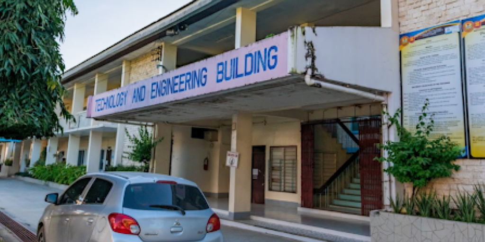
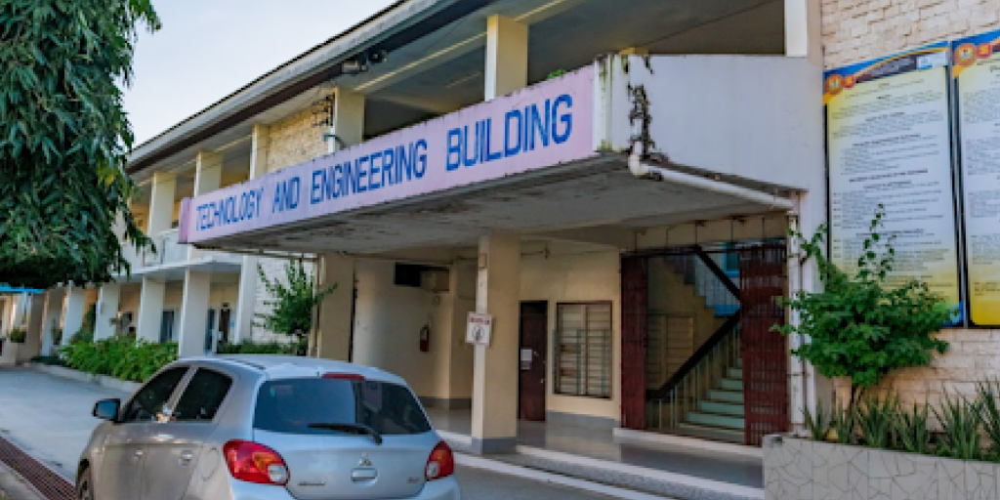

COLLEGE OF TECHNOLOGY
 

CTU-Danao's College of Technology is your gateway to a hands-on, practical education in exciting technical fields. They offer Bachelor of Industrial Technology (BIT) programs that focus on:
Bachelor of Industrial Technology (BIT) Major in Automotive Technology: Learn to repair, maintain, and customize cars and other vehicles.
Bachelor of Industrial Technology (BIT) Major in Computer Technology: Master the skills to build, troubleshoot, and manage computer systems.
Bachelor of Industrial Technology (BIT) Major in Drafting Technology: Become a skilled designer, creating blueprints and technical drawings for buildings and machines.
Bachelor of Industrial Technology (BIT) Major in Electrical Technology: Gain expertise in electrical systems, from wiring homes to designing power grids.
Bachelor of Industrial Technology (BIT) Major in Electronics Technology: Dive into the world of circuits and devices, building and fixing everything from smartphones to robots.
Bachelor of Industrial Technology (BIT) Major in Power Plant Technology: Learn to operate and maintain power plants, ensuring reliable energy for homes and businesses.
If you're interested in a career that combines technical skills with practical experience, the College of Technology at CTU-Danao is the place for you!
BACK